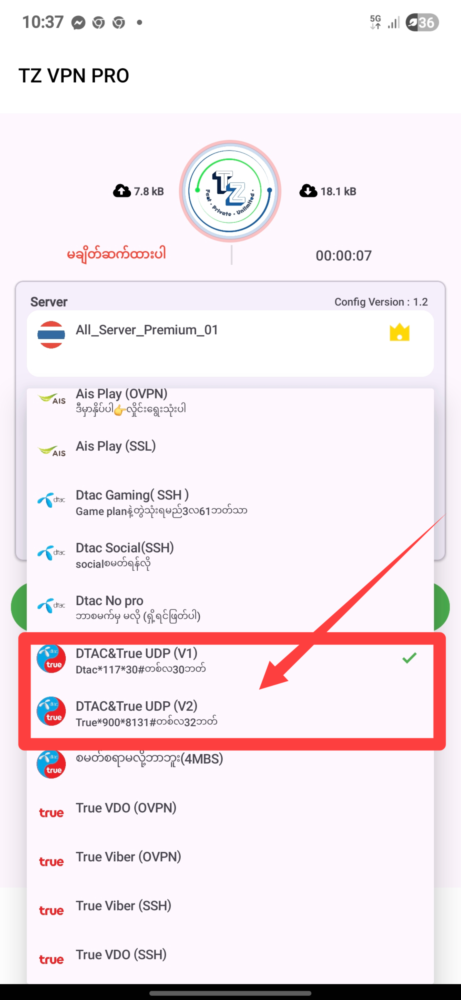
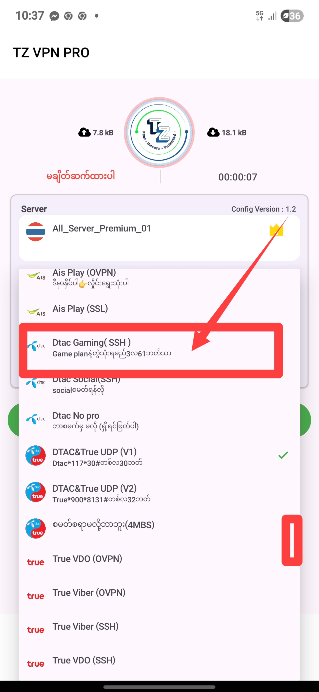
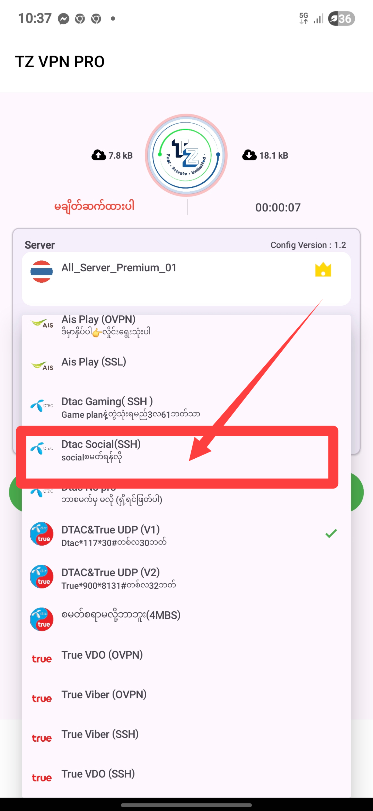
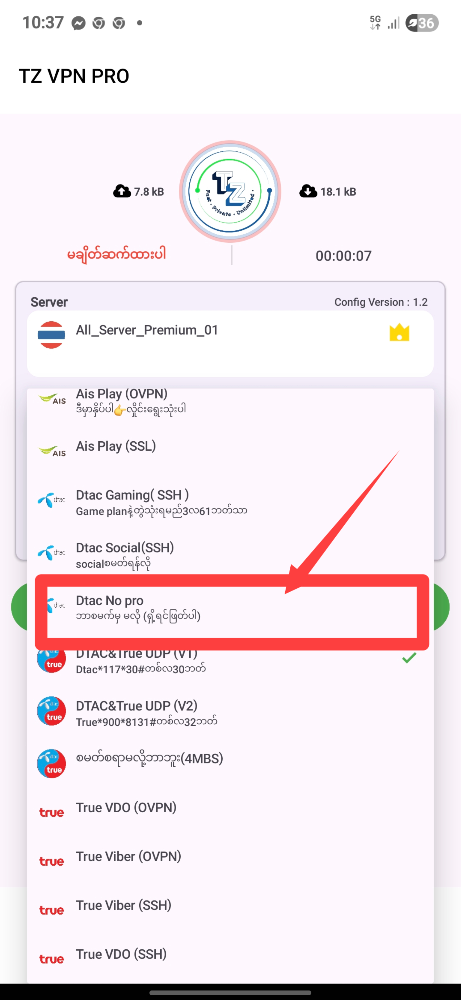

📡 TRUE MOVE အတွက် လမ်းညွှန်
True Move SIM အတွက် အဆင့်လိုက်နည်းလမ်းများ။
အဆင့် ၁ - App ထည့်သွင်း

အဆင့် ၂ - Package ရယူ

အဆင့် ၃ - VPN ဖွင့်

အဆင့် ၄ - ဆက်တင်ပြင်

အဆင့် ၅ - အောင်မြင်ပြီး

DTAC VPN သုံးဖို့အဆင်ပြေတဲ့ နည်းလမ်းအဆင့်လိုက်ပြထားပါတယ်။
ကြိုင်ဒီ အရက်နက် (*117*30#)ရက်၃၀ ၃၀ဘတ်
Game package dtac appထဲမှာ ဝင်စမတ်ပါ ရက်၉၀ ၆၁ဘတ်
dtac social
dtac nopro ဘာစမတ်မှရှိ့ရန်မလိုပါ ရှိ့လျှင်ဖြတ်ပါ ဒါမှသာ လိုင်းကောင်းပါမည်
True Move SIM အတွက် အဆင့်လိုက်နည်းလမ်းများ။
အဆင့် ၁ - App ထည့်သွင်း
အဆင့် ၂ - Package ရယူ
အဆင့် ၃ - VPN ဖွင့်
အဆင့် ၄ - ဆက်တင်ပြင်
အဆင့် ၅ - အောင်မြင်ပြီး
AIS SIM သုံးသူများအတွက် လွယ်ကူစွာ VPN ချိတ်နည်း။
အဆင့် ၁ - App ထည့်သွင်း

အဆင့် ၂ - ချိတ်ဆက်ပြီး